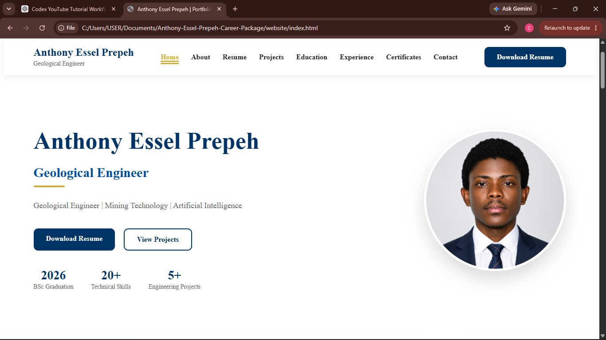
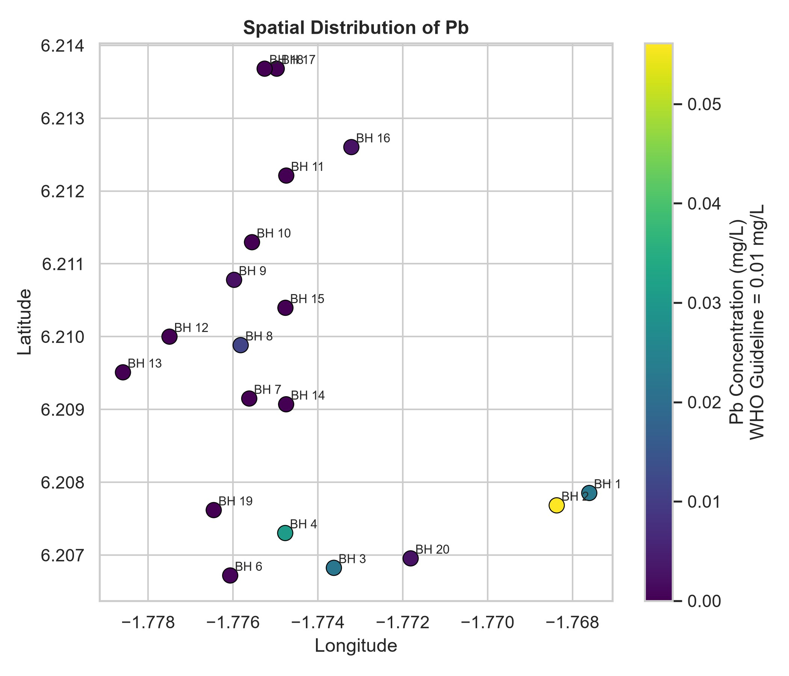

Career Operating System
Category:
Software Development
Status:
In Progress
Designed and developed an automated career management platform that generates a professional portfolio website, HTML résumé, PDF résumé and supporting career documents from a single source of truth using Python automation and structured YAML data.
Project Objective
To build a maintainable and scalable system that simplifies career document management while demonstrating software engineering, automation and technical communication skills.
Technologies
PythonGitGitHubMarkdownYAMLHTMLCSSPandocVisual Studio Code
Skills Demonstrated
Software DevelopmentAutomationDocumentationVersion ControlTechnical Writing

Orebody Modelling & Resource Evaluation
Category:
Geological Engineering
Status:
In Progress
Final-year Geological Engineering project involving geological interpretation, orebody modelling and resource evaluation to support mineral exploration and mine planning.
Project Objective
To interpret geological data and develop an accurate representation of the orebody for engineering analysis and resource estimation.
Technologies
Leapfrog GeoGISGeological InterpretationTechnical Reporting
Skills Demonstrated
Orebody ModellingResource EvaluationGeological MappingData Interpretation

Groundwater Analysis of Heavy Metals
Category:
Hydrogeology
Status:
In Progress
Hydrogeological investigation assessing groundwater quality through heavy metal analysis and interpretation of environmental data.
Project Objective
To evaluate groundwater quality and identify potential environmental and public health implications of heavy metal contamination.
Technologies
HydrogeologyGISData AnalysisLaboratory Investigation
Skills Demonstrated
Water Quality AssessmentHydrogeologyEnvironmental AnalysisTechnical Reporting